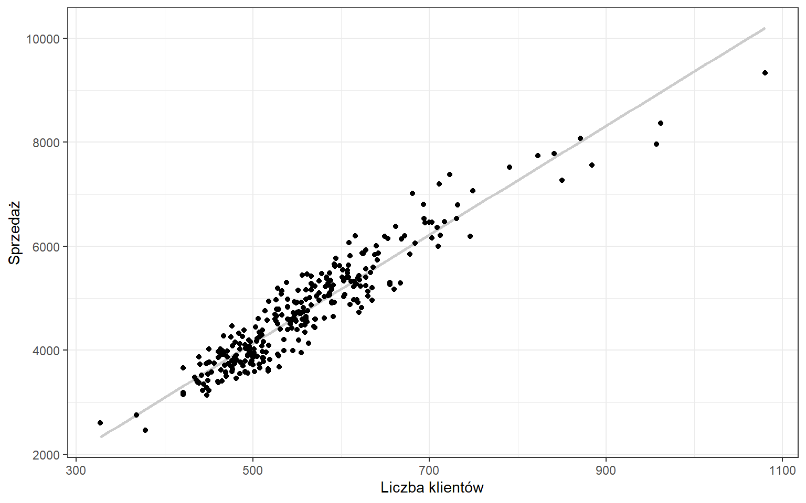

5 Regresja
Metoda regresji wykorzystywana jest do funkcyjnego odwzorowania zależności pomiędzy badanymi zmiennymi. Jej celem jest poszukanie określonej klasy funkcji, która w możliwie najlepszy sposób charakteryzowałaby zależność pomiędzy zmiennymi. Funkcję tą określa się mianem funkcji regresji. Budując model chcemy osiągnąć określone cele poznawcze.
5.1 Regresja prosta
Celem regresji jest określenie, na podstawie dostępnych informacji, nieznanej wartości analizowanej cechy. Znamy wartości sprzedaży oraz liczby klientów w danym sklepie Rossmann i chcielibyśmy wyznaczyć możliwy poziom sprzedaży przy danej liczbie klientów np. 1000 klientów.
Podobnie jak w analizie korelacji punktem wyjścia w regresji prostej jest utworzenie wykresu rozrzutu. Ażeby móc zastosować model regresji musi występować związek korelacyjny pomiędzy zmiennymi oraz musi to być związek liniowy. Następnie na podstawie kryteriów merytorycznych określamy zmienną objaśnianą (\(y\)) oraz zmienną objaśniającą (\(x\)).
W analizowanym przez nas przypadku zmienną objaśnianą będzie poziom sprzedaży (\(y\)), który będziemy wyjaśniać liczbą klientów (\(x\)). Naszym celem jest znalezienie wzoru prostej, która będzie przebiegać możliwie najbliżej wszystkich punktów wykresu. W tym celu stosuje się Klasyczną Metodę Najmniejszych Kwadratów (KMNK).
Ogólna postać prostej regresji jest następująca:
\[\hat{y}_{i}=a_{1}x_{i}+a_{0}\]
gdzie \(y\) z daszkiem (\(\hat{y}\)) oznacza wartość teoretyczną, leżącą na wyznaczonej prostej.
Wobec tego wartości empiryczne (y) będą opisane formułą:
\[y_{i}=a_{1}x_{i}+a_{0}+u_{i}\]
w której \(u_i\) oznacza składnik resztowy wyliczany jako \(u_{i}=y_{i}-\hat{y}_{i}\).
Musimy wyznaczyć współczynnik kierunkowy tej prostej (\(a_1\)) oraz punkt przecięcia z osią OY (\(a_0\)) określany mianem wyrazu wolnego.

Wartości tych współczynników możemy policzyć z wykorzystaniem następujących wzorów:
\[ a_{1}=\frac{\sum\limits_{i=1}^{n}{(x_{i}-\bar{x})(y_{i}-\bar{y})}}{\sum\limits_{i=1}^{n}{(x_{i}-\bar{x})^{2}}} \]
lub znając wartość współczynnika korelacji liniowej Pearsona:
\[a_{1}=r\frac{S_{y}}{S_{x}}\]
z kolei wartość wyrazu wolnego można uzyskać ze wzoru:
\[a_{0}=\bar{y}-a_{1}\bar{x}\]
gdzie:
- \(r\) — współczynnik korelacji liniowej Pearsona pomiędzy cechą \(x\) i \(y\),
- \(S_y\) — odchylenie standardowe dla cechy \(y\),
- \(S_x\) — odchylenie standardowe dla cechy \(x\),
- \(\bar{y}\) — średnia dla cechy \(y\),
- \(\bar{x}\) — średnia dla cechy \(x\).
Na tej podstawie ustalamy, że interesująca nas prosta ma następujący wzór:
\[\hat{y}_i=10,45x_i-1091,22\]
Współczynnik kierunkowy (\(a_1\)) informuje o ile przeciętne zmieni się wartość zmiennej objaśnianej (y), gdy wartość zmiennej objaśniającej (x) wzrośnie o jednostkę. W naszym przypadku wzrost liczby klientów o 1 osobę spowoduje średni wzrost sprzedaży o 10,45 euro.
Z kolei wyraz wolny (\(a_0\)) to wartość zmiennej objaśnianej (y), w sytuacji w której wartość zmiennej objaśniającej (x) będzie równa 0. Należy zachować szczególną ostrożność przy interpretacji tego współczynnika, ponieważ często jest on pozbawiony sensu. W analizowanym przykładzie współczynnik \(a_0\) informuje, że przy zerowej liczbie klientów sprzedaż w sklepie nr 1 wyniesie -1091,22 euro.
Kolejnym elementem analizy regresji jest ocena dopasowania modelu. W tym celu posługujemy się kilkoma miarami.
Pierwszą miarą, która opisuje dopasowanie funkcji regresji do danych empirycznych jest odchylenie standardowe składnika resztowego, które jest pierwiastkiem z sumy kwadratów reszt podzielonej przez liczbę obserwacji pomniejszoną o 2. To pomniejszenie mianownika wynika z faktu, że w modelu mamy dwa współczynniki \(a_1\) i \(a_0\), które w ten sposób uwzględniamy. Formalnie można to zapisać w następujący sposób:
\[S_{u}=\sqrt{\frac{\sum\limits_{i=1}^{n}{(y_{i}-\hat{y}_{i})^2}}{n-2}}\]
lub
\[S_{u}=\sqrt{\frac{\sum\limits_{i=1}^{n}{u_i^2}}{n-2}}\]
Miara ta określa, o ile, przeciętnie biorąc (\(+/-\)), wartości empiryczne zmiennej objaśnianej odchylają się od wartości teoretycznych tej zmiennej, obliczonej na podstawie funkcji regresji. W analizowanym przypadku możemy stwierdzić, że znane wartości sprzedaży odchylają się od wartości teoretycznych średnio o \(+/-\) 351,57 euro.
Odchylenie standardowe składnika resztowego jest także miarą błędu prognozy. Przykładowo, chcemy sprawdzić jak będzie kształtować się sprzedaż przy liczbie klientów równej 1000 osób. Po podstawieniu tej wartości do funkcji regresji otrzymamy:
\[y_{1000}=10,45 \cdot 1000 - 1091,22=9358,78\]
Na tej podstawie stwierdzamy, że przy 1000 klientów prognozowana sprzedaż wyniosłaby 9358,78 euro \(+/-\) 351,57 euro.
Kolejna miara to współczynnik zmienności resztowej, który otrzymujemy poprzez podzielenie odchylenia standardowego składnika resztowego przez średni poziom cechy:
\[V_{u}=\frac{S_{u}}{\bar{y}}\cdot 100\%\]
Współczynnik ten wskazuje, jaki procent średniego poziomu zmiennej objaśnianej stanowią wahania losowe, których miarą jest \(S_{u}\). Parametr \(V_{u}\) jest więc miernikiem relatywnej wielkości błędu losowego. Niektórzy autorzy postulują, że błąd ten można umownie uznać za dopuszczalny, jeśli \(V_{u}<15\%\). Należy się jednak wystrzegać przed ,,dogmatycznym’’ podejściem do oceny modeli regresji i jedynie słusznych progów.
W naszym przypadku ten współczynnik będzie równy \(V_{u}=\frac{351,57}{4730,72}\cdot 100\%=7\%\) co oznacza, że 7% średniego poziomu sprzedaży stanowią wahania losowe.
Równie ważną miarą dopasowania funkcji regresji do danych empirycznych jest współczynnik determinacji lub bardziej potocznie współczynnik r kwadrat — od symbolu, którym jest oznaczany. Współczynnik ten obliczany jest na podstawie reszt z modelu oraz odchyleń wartości empirycznych od średniej:
\[R^2=1-\frac{\sum\limits_{i=1}^{n}{(y_{i}-\hat{y}_{i})^2}}{\sum\limits_{i=1}^{n}{(y_{i}-\bar{y}_{i})^2}}\]
lub jako kwadrat współczynnika korelacji liniowej Pearsona:
\[R^2=r_{xy}^2\]
Określa, jaki procent wariancji zmiennej objaśnianej został wyjaśniony przez funkcję regresji. \(R^2\) przyjmuje wartości z przedziału \(<0;1>\) (\(<0\%;100\%>\)), przy czym model regresji tym lepiej opisuje zachowanie się badanej zmiennej objaśnianej, im \(R^2\) jest bliższy jedności (bliższy 100%)
Analizowany przez nas model regresji jest bardzo dobry: \(R^2=0,89\), co oznacza, że oszacowany model regresji wyjaśnia 89% zmienności sprzedaży.
Przeciwieństwem współczynnik determinacji \(R^2\) jest współczynnik zbieżności (indeterminacji). Tę miarę można wyznaczyć korzystając ze wzoru:
\[\varphi^2=\frac{\sum\limits_{i=1}^{n}{(y_{i}-\hat{y}_{i})^2}}{\sum\limits_{i=1}^{n}{(y_{i}-\bar{y}_{i})^2}}\]
bądź odejmując od wartości 1 wartość współczynnika \(R^2\):
\[\varphi^2=1-R^2\]
Współczynnik zbieżności \(\varphi^2\) określa, jaka część wariancji badanej zmiennej objaśnianej nie została wyjaśniona przez funkcję regresji. Oczywiste jest więc, że korzystna sytuacja występuje wówczas, gdy \(\varphi^2\) jest bliższy zera.
W przyjętym przez nas modelu regresji \(\phi^2=11\%\), co oznacza, że 11% zmienności sprzedaży nie została wyjaśniona przez funkcję regresji. Można także powiedzieć, że 11% zmienności sprzedaży stanowią czynniki losowe nie wyjaśniane przez funkcję regresji.
Ostatnim elementem analizy jest ocena jakości parametrów funkcji regresji \(a_1\) i \(a_0\). Równanie regresji wyznaczyliśmy na podstawie dostępnych danych, ale nie znamy równania tej prostej w populacji. W związku z czym mogliśmy się trochę pomylić przy obliczaniu współczynników \(a_1\) i \(a_0\). W celu oceny skali tych błędów wyznacza się błędy średnie szacunku ocen parametrów funkcji regresji według wzorów:
\[S_{a_{1}}=\frac{S_{u}}{\sqrt{\sum\limits_{i=1}^{n}{(x_{i}-\bar{x})^2}}}\]
oraz
\[S_{a_{0}}=\sqrt{\frac{S_{u}^{2}\sum\limits_{i=1}^{n}{{x_{i}^2}}}{n\sum\limits_{i=1}^{n}{(x_{i}-\bar{x})^2}}}\]
Błędy te wskazują, o ile, przeciętnie biorąc (\(+/-\)), odchylają się oceny parametrów modelu regresji od ich wartości prawdziwych. Jest oczywiście pożądane, żeby te błędy były możliwie jak najmniejsze. W związku z powyższym przyjmuje się, że ilorazy:
\[V_{a_{1}}=\frac{S_{a_{1}}}{a_{1}}\]
\[V_{a_{0}}=\frac{S_{a_{0}}}{a_{0}}\]
nie powinny przekraczać wartości 0,5 (50%) w wartości bezwzględnej.
Jest to szczególnie istotne w przypadku parametru współczynnika kierunkowego \(a_1\), natomiast dla wyrazu wolnego \(a_0\) ta własność nie musi być spełniona.
W analizowanym przez nas modelu wartość parametru \(a_1\) odchyla się od jego wartości prawdziwej o \(+/-\) 0,21 co stanowi 2% wartości tego parametru. Z kolei wartość parametru \(a_0\) odchyla się od jego wartości prawdziwej o \(+/-\) 119,81 co stanowi 11% wartości tego parametru.
Regresja prosta w Excelu
- Sposób nr 1
Parametry funkcji regresji można także wyznaczyć korzystając z wbudowanej funkcji programu Excel — REGLINP. Składnia jest następująca:
- REGLINP(wektor_y; wektor_x; stała; statystyka)
gdzie:
- wektor_y — zestaw wartości zmiennej objaśnianej (y),
- wektor_x — zestaw wartości zmiennej objaśniającej (y),
- stała — jeśli podamy wartość 1 to wyraz wolny jest obliczany normalnie, jeśli podamy 0 to zostanie oszacowany model bez wyrazu wolnego,
- statystyka — jeśli argument ma wartość 1 to funkcja REGLINP zwraca dodatkowe statystyki regresji, natomiast jeśli ma wartość 0 to funkcja zwraca tylko wartości współczynnika kierunkowego oraz wyrazu wolnego.
Po napisaniu funkcji i uwzględnieniu wszystkich argumentów naciskamy ENTER — powinna pojawić się jedna wartość. Następnie należy zaznaczyć obszar 2 kolumny na 5 wiersze uwzględniając w lewej górnej komórce otrzymaną wcześniej wartość. W kolejnym kroku przechodzimy do PASKU FORMUŁY programu Excel i korzystamy z tajemnej formuły CTRL+SHIFT+ENTER.
W rezultacie otrzymujemy tabelę o wymiarach 2x5, która zawiera następujące elementy:
| Współczynnik kierunkowy (\(a_{1}\)) | Wyraz wolny (\(a_{0}\)) |
| Średni błąd szacunku parametru (\(S_{a_{1}}\)) | Średni błąd szacunku parametru (\(S_{a_{0}}\)) |
| Współczynnik determinacji (\(R^2\)) | Odchylenie standardowe składnika resztowego (\(S_{u}\)) |
| Statystyka F (\(F\)) | Liczba stopni swobody (\(n-2\)) |
| Regresyjna suma kwadratów (\(\sum{(\hat{y}-\bar{y})^2}\)) | Suma kwadratów reszt (\(\sum{(y-\hat{y})^2}\)) |
- Sposób nr 2
Zaznaczamy punkty na wykresie rozrzutu i klikamy prawym przyciskiem myszy. Wybieramy Dodaj linię trendu, a następnie zaznaczamy opcje Wyświetl równanie na wykresie oraz Wyświetl wartości R-kwadrat na wykresie.
- Sposób nr 3
Do wyznaczenia parametrów regresji można także wykorzystać graficzne środowisko analizy danych. W tych celu wybieramy zakładkę DANE i po prawej stronie ANALIZA DANYCH. W menu zaznaczamy REGRESJA i klikamy OK. W opcjach wejścia zaznaczamy:
- Zakres wejściowy Y — zestaw wartości zmiennej objaśnianej (y),
- Zakres wejściowy X — zestaw wartości zmiennej objaśniającej (x),
- Tytuły — jeśli zostały zaznaczone kolumny wraz z nagłówkami.
W opcjach wyjścia określamy miejsce wyświetlenia wyniku: bieżący arkusz/nowy arkusz/nowy skoroszyt.
W rezultacie otrzymujemy następujący wynik:
PODSUMOWANIE - WYJŚCIE
| Statystyki regresji | |
|---|---|
| Wielokrotność R | \(r\) |
| R kwadrat | \(R^2\) |
| Dopasowany R kwadrat | |
| Błąd standardowy | \(S_{u}\) |
| Obserwacje | \(n\) |
ANALIZA WARIANCJI
| df | SS | MS | F | Istotność F | |
|---|---|---|---|---|---|
| Regresja | 1 | \(\sum{(\hat{y}-\bar{y})^2}\) | \(F\) | ||
| Resztkowy | \(n-2\) | \(\sum{(y-\hat{y})^2}\) | |||
| Razem | \(n-1\) |
| Współczynniki | Błąd standardowy | t Stat | Wartość-p | |
|---|---|---|---|---|
| Przecięcie | \(a_{0}\) | \(S_{a_{0}}\) | ||
| zmienna x | \(a_{1}\) | \(S_{a_{1}}\) |
Zależności:
Jeżeli ze wzoru na odchylenie standardowe składnika resztowego usuniemy pierwiastek to otrzymamy wariancję składnika resztowego, którą należy najpierw spierwiastkować, aby móc przeprowadzić interpretację.
Jeśli bardzo chcemy policzyć wartość odchylenia standardowe składnika resztowego na podstawie wartości surowych to wartość licznika możemy odczytać z funkcji REGLINP — 5 wiersz, 2 kolumna. Wówczas wystarczy podzielić tę wartość przez 4 wiersz drugiej kolumny i spierwiastkować, aby otrzymać wartość \(S_u\). Podobnie postępujemy, jeśli korzystamy z narzędzia REGRESJA.
Zadania
Ilu klientów powinno przyjść do sklepu nr 7, żeby możliwe było osiągnięcie sprzedaży na poziomie 20000 euro? Zapisz uzyskany model, zinterpretuj parametry regresji oraz oceń jakość dopasowania.
5.2 Trend liniowy
Oprócz określania nieznanych wartości cechy, regresja jest także wykorzystywana do prognozowania w czasie. Przykładowo mając dane dotyczące miesięcznej sprzedaży w roku 2014 spróbujemy określić możliwą sprzedaż w wybranym miesiącu 2015 roku.
Sposób postępowania jest bardzo podobny do regresji prostej z tym, że zamiast wartości cechy \(x\) mamy kolejne numery okresów \(t=1,2,3,..., n\). Wówczas równanie trendu ma następującą postać:
\[\hat{y}_{i}=a_{1}t_{i}+a_{0}\]
Po oszacowaniu parametrów \(a_1\) i \(a_0\) nieco inaczej je zinterpretujemy. Wartość parametru \(a_1\) informuje o średniej zmianie cechy \(y\) z okresu na okres, z kolei \(a_0\) to wartość wynikająca z modelu dla okresu poprzedzającego analizę.
Spróbujmy określić możliwą sprzedaż w styczniu 2015 roku dla sklepu nr 7. W tym zagregowaliśmy dane do postaci miesięcznej. Model regresji ma następującą postać:
\[\hat{y}_{i}=4850t_{i}+196592\]
Wynika z niego, że z miesiąca na miesiąc sprzedaż rosła średnio o 4850 euro. Natomiast możliwa sprzedaż w grudniu 2013 roku wynosiła 196592 euro.
Ocena jakości modelu przebiega analogicznie jak w przypadku regresji prostej. Inaczej wyznacza się błąd prognozy, co wynika z faktu, że im bardziej “oddalimy” się od okresu na podstawie którego oszacowaliśmy parametry trendu, tym błąd prognozy będzie większy.
Przy obliczaniu błędu prognozy korzystamy ze wzoru:
\[D(y_{T}^{P})=S_u\sqrt{1+\frac{1}{n}+\frac{(T-\bar{t})^2}{\sum\limits_{t=1}^{n}{(t_i-\bar{t})^2}}}\]
gdzie:
- \(S_u\) — odchylenie standardowe składnika resztowego,
- \(n\) — liczba znanych okresów,
- \(\bar{t}\) — średnia z numerów okresów,
- \(T\) — numer okresu, na który stawiana jest prognoza.
Odchylenie standardowe składnika resztowego wynosiło 20031 euro, co oznacza, że znane wartości miesięcznej sprzedaży odchylają się od wartości wynikających z trendu średnio o \(+/-\) 20031 euro.
Wyznaczając błąd prognozy musimy uwzględnić dodatkowy składnik uwzględniający czas. W związku z tym prognozowana sprzedaż w styczniu 2015 roku wyniesie:
\[\hat{y}_{13}=4850\cdot13+196592=259639\]
a błąd prognozy:
\[D(y_{13}^{P})=20031\sqrt{1+\frac{1}{12}+\frac{(13-6,5)^2}{143}}=23521\]
Czyli prognozowana miesiączna sprzedaż w styczniu 2015 roku wyniesie 259 639 euro +/- 23 521 euro.
Natomiast dla lutego wartość błędu prognozy będzie już większa:
\[\hat{y}_{14}=4850\cdot14+196592=264489\]
\[D(y_{14}^{P})=20031\sqrt{1+\frac{1}{12}+\frac{(14-6,5)^2}{143}}=24341\]
Zadania
Ile wynosi prognozowana miesięczna sprzedaż (oraz błąd prognozy) w sklepie nr 5 w kwietniu 2015 roku.
Zadanie egzaminacyjne
Postanowiono zbadać zależność pomiędzy dzienną liczbą klientów (w tys. osób) a dziennym przychodem (w tys. zł) w pewnej sieci sklepów. W tym celu wybrano 16 sklepów (po jednym z każdego województwa), w których badano te wielkości. Analiza wykazała, że średnia liczba klientów wynosiła 1,5 tys. osób, a dziennego przychodu 40 tys. zł. Współczynnik zmienności dla liczby klientów był równy 13%, a dla przychodu 17%. Suma kwadratów reszt wynosiła 70, a współczynnik korelacji liniowej Pearsona 0,89.
- Wyznacz parametry funkcji regresji i zapisz jej postać.
- Oceń jakość otrzymanej funkcji.
- Ile wynosi prognozowany dzienny przychód (oraz błąd prognozy) dla sklepu obsługującego dziennie 800 osób?
Rozwiązanie
Dane:
- \(\bar{x}=1,5\)
- \(\bar{y}=40\)
- \(V_x=0,13\)
- \(V_y=0,17\)
- \(\sum{(y-\hat{y})^2}=70\)
- \(n=16\)
- \(r=0,89\)
Na podstawie powyższych danych wyznaczamy \(S_x=V_x\cdot \bar{x}=0,13\cdot 1,5=0,195\) oraz \(S_y=V_y\cdot \bar{y}=0,17\cdot 40=6,8\). Następnie \(S_u=\sqrt{\frac{\sum{(y-\hat{y})^2}}{n-2}}=\sqrt{\frac{70}{16-2}}=2,24\).
Na podstawie odpowiednich wzorów wyznaczamy parametry regresji: \(a_1=r\cdot\frac{S_y}{S_x}=0,89\cdot \frac{6,8}{0,195}=31,04\) oraz \(a_0=\bar{y}-a_1\cdot\bar{x}=40-31,04\cdot1,5=-6,55\). W związku z tym funkcja regresji ma następującą postać:
\[\hat{y}=31,04\cdot x - 6,55\]
Jakość modelu oceniamy na podstawie wartości \(S_u\) oraz \(R^2=r^2=0,89^2=0,79\).
Dzienny przychód dla sklepu obsługującego dziennie 800 osób będzie wynosił \(\hat{y}(0,8)=31,04 \cdot 0,8 -6,55=18,27\) tys. zł \(+/- 2,24\) tys. zł.